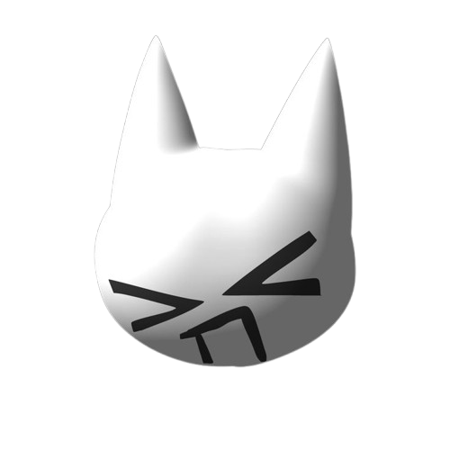

Sou Gustavo, entusiasta da tecnologia e da programação, com foco no desenvolvimento contínuo de conhecimentos e habilidades na área de software.
Atualmente, estudo linguagens e tecnologias como HTML, CSS, JavaScript e um pouco de Python, buscando compreender boas práticas de desenvolvimento e criar soluções cada vez mais eficientes. Tenho interesse em desenvolvimento web, lógica de programação e na constante evolução do setor tecnológico.
Valorizo o aprendizado contínuo, a dedicação e a capacidade de enfrentar novos desafios. Este portfólio reúne projetos que representam minha trajetória de estudos, meu desenvolvimento técnico e meu compromisso com o crescimento profissional na área da tecnologia.